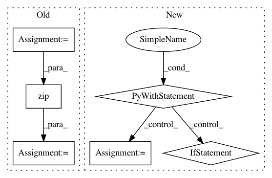

828381fe30ae454cda23b971991861346afd1b97,hypergan/optimizers/curl_optimizer.py,CurlOptimizer,apply_gradients,#CurlOptimizer#Any#Any#Any#,44
Before Change
op5 = tf.group(*[ tf.assign(w,v) for w,v in zip(restored_vars, tmp_vars)])
with tf.get_default_graph().control_dependencies([op5]):
flin = gswap
flin = []
for grad, jg in zip(gswap, Jgrads):
if jg is None:
print("JG NONE", grad)
flin += [grad]
else:
flin += [grad + jg * self._beta]
step3 = zip(flin, var_list)
op6 = self.optimizer.apply_gradients(step3, global_step=global_step, name=name)
with tf.get_default_graph().control_dependencies([op6]):
return tf.no_op()
After Change
with tf.get_default_graph().control_dependencies([op5]):
op6 = self.optimizer.apply_gradients(grads_and_vars, global_step=global_step, name=name)
with tf.get_default_graph().control_dependencies([op6]):
consensus_reg = 0.5 * sum(
tf.reduce_sum(tf.square(g)) for g in all_grads[:len(d_vars)] if g is not None
)
Jgrads = tf.gradients(consensus_reg, d_vars) + [tf.zeros_like(g) for g in g_vars]
op7 = [tf.assign_sub(v, (jg * self._beta)) if jg is not None else tf.assign_sub(v,grad) for v,grad, jg in zip(var_list, all_grads, Jgrads)]
with tf.get_default_graph().control_dependencies(op7):
return tf.no_op()
def _apply_sparse(self, grad, var):
raise NotImplementedError("Sparse gradient updates are not supported.")
def variables(self):
return super().variables() + self.optimizer.variables()
In pattern: SUPERPATTERN
Frequency: 3
Non-data size: 6
Instances
Project Name: HyperGAN/HyperGAN
Commit Name: 828381fe30ae454cda23b971991861346afd1b97
Time: 2018-11-02
Author: martyn@255bits.com
File Name: hypergan/optimizers/curl_optimizer.py
Class Name: CurlOptimizer
Method Name: apply_gradients
Project Name: azavea/raster-vision
Commit Name: fe8fee4f05e08a6448d46b8f70d960f02ef048b8
Time: 2021-01-08
Author: AdeelH@users.noreply.github.com
File Name: rastervision_pytorch_backend/rastervision/pytorch_backend/pytorch_chip_classification.py
Class Name: PyTorchChipClassification
Method Name: predict
Project Name: reinforceio/tensorforce
Commit Name: ee950b503eeed5aca3747a4bcf2a40f624b743a0
Time: 2019-01-21
Author: alexkuhnle@t-online.de
File Name: tensorforce/core/optimizers/multi_step.py
Class Name: MultiStep
Method Name: tf_step